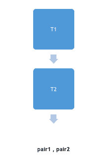

STL 中的偶对模板
注意:虽然 Pair 和 Tuple 实际上不是容器库的一部分，但是我们仍然会讨论它们，因为它们是编程竞赛中非常常见的需求，并且它们使得某些事情非常容易实现。
对的语法是:
pair<T1,T2> pair1, pair2 ;
上面的代码创建了两对，即第一对 1 和第二对 2，它们都有第一个 T1 类型的对象和第二个 T2 类型的对象。
现在 T1 将被称为第一个，T2 将被称为配对 1 和配对 2 的第二个成员。

偶对模板:一些常用函数
以下是偶对模板一些功能:
- 运算符
=:给一对赋值。 - 交换:交换配对的内容。
- make_pair():创建并返回一个包含由参数列表定义的对象的对。
- 运算符(==，！=，>，< , <= , > =):按字典顺序比较两对。
演示结偶对模板的程序
#include <iostream>
using namespace std;
int main ()
{
pair<int,int> pair1, pair3; //creats pair of integers
pair<int,string> pair2; // creates pair of an integer an a string
pair1 = make_pair(1, 2); // insert 1 and 2 to the pair1
pair2 = make_pair(1, "Studytonight") // insert 1 and "Studytonight" in pair2
pair3 = make_pair(2, 4)
cout<< pair1.first << endl; // prints 1, 1 being 1st element of pair1
cout<< pair2.second << endl; // prints Studytonight
if(pair1 == pair3)
cout<< "Pairs are equal" << endl;
else
cout<< "Pairs are not equal" << endl;
return 0;
}